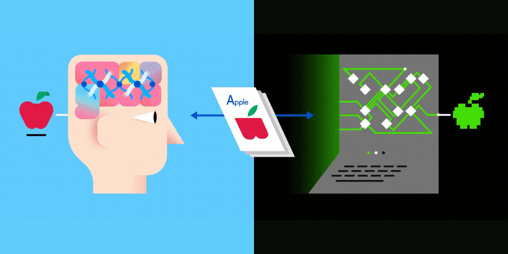

What are Generative Adversial Networks (GAN)?
Generative Adversarial Networks, or GANs for short, are an approach to generative modeling using deep learning methods, such as convolutional neural networks.
Generative modeling is an unsupervised learning task in machine learning that involves automatically discovering and learning the regularities or patterns in input data in such a way that the model can be used to generate or output new examples that plausibly could have been drawn from the original dataset.
GANs are a clever way of training a generative model by framing the problem as a supervised learning problem with two sub-models: the generator model that we train to generate new examples, and the discriminator model that tries to classify examples as either real (from the domain) or fake (generated). The two models are trained together in a zero-sum game, adversarial, until the discriminator model is fooled about half the time, meaning the generator model is generating plausible examples.

Neural networks are a set of algorithms, whose model is inspired by the human brain. Neural networks are designed to recognise and distinguish between patterns. They interpret sensory data through a kind of machine perception, labelling or clustering raw input. The patterns they recognise are numerical, contained in vectors, into which data such as images, sound, or text must be translated.
That's all cool, but how do GANs work?

The GAN model architecture involves two sub-models: a generator model for generating new examples and a discriminator model for classifying whether generated examples are real, from the domain, or fake, generated by the generator model.
- Generator: Model that is used to generate new plausible examples from the problem domain.
- Discriminator: Model that is used to classify examples as real (from the domain) or fake (generated).
The Generator Model
The generator model takes a fixed-length random vector as input and generates a sample in the domain.
The vector is drawn from randomly from a Gaussian distribution, and the vector is used to seed the generative process. After training, points in this multidimensional vector space will correspond to points in the problem domain, forming a compressed representation of the data distribution.
This vector space is referred to as a latent space, or a vector space comprised of latent variables. Latent variables, or hidden variables, are those variables that are important for a domain but are not directly observable.
The Discriminator Model
The discriminator model takes an example from the domain as input (real or generated) and predicts a binary class label of real or fake (generated).
The real example comes from the training dataset. The generated examples are output by the generator model.
The discriminator is a normal (and well understood) classification model.
After the training process, the discriminator model is discarded as we are interested in the generator.
Understanding how both play as a two player game
We can think of the generator as being like a counterfeiter, trying to make fake money, and the discriminator as being like police, trying to allow legitimate money and catch counterfeit money. To succeed in this game, the counterfeiter must learn to make money that is indistinguishable from genuine money, and the generator network must learn to create samples that are drawn from the same distribution as the training data.
Generative modeling is an unsupervised learning problem, as we discussed in the previous section, although a clever property of the GAN architecture is that the training of the generative model is framed as a supervised learning problem.
The two models, the generator and discriminator, are trained together. The generator generates a batch of samples, and these, along with real examples from the domain, are provided to the discriminator and classified as real or fake.
The discriminator is then updated to get better at discriminating real and fake samples in the next round, and importantly, the generator is updated based on how well, or not, the generated samples fooled the discriminator.

We're going to start with a pre-trained model called GFP-GAN (Generative Facial Prior Generative Adversial Network) that aims at developing a Practical Algorithm for Real-world Face Restoration. It leverages rich and diverse priors encapsulated in a pretrained face GAN (e.g., StyleGAN2) for image correction
Step 1: Installing all the dependencies
We're going to use Google Colab for this part so we can utilize its GPU.
Here's the code for that part.
# Clone GFPGAN and enter the GFPGAN folder
%cd /content
!rm -rf GFPGAN
!git clone https://github.com/TencentARC/GFPGAN.git
%cd GFPGAN
# Set up the environment
# Install basicsr - https://github.com/xinntao/BasicSR
# We use BasicSR for both training and inference
!pip install basicsr
# Install facexlib - https://github.com/xinntao/facexlib
# We use face detection and face restoration helper in the facexlib package
!pip install facexlib
# Install other depencencies
!pip install -r requirements.txt
!python setup.py develop
!pip install realesrgan # used for enhancing the background (non-face) regions
# Download the pre-trained model
!wget https://github.com/TencentARC/GFPGAN/releases/download/v0.2.0/GFPGANCleanv1-NoCE-C2.pth -P experiments/pretrained_models
Step 2: Uploading the inputs
We can use the demo images or our own images from the internet for this purpose.
Here's the code for using own images.
# upload your own images
import os
from google.colab import files
import shutil
upload_folder = 'inputs/upload'
if os.path.isdir(upload_folder):
shutil.rmtree(upload_folder)
os.mkdir(upload_folder)
# upload images
uploaded = files.upload()
for filename in uploaded.keys():
dst_path = os.path.join(upload_folder, filename)
print(f'move {filename} to {dst_path}')
shutil.move(filename, dst_path)
Or, you can use this code for the demo images.
import shutil
import os
upload_folder = 'inputs/upload'
if os.path.isdir(upload_folder):
shutil.rmtree(upload_folder)
os.makedirs(upload_folder, exist_ok=True)
shutil.move('inputs/whole_imgs/Blake_Lively.jpg', 'inputs/upload/Blake_Lively.jpg')
Step 3: Inference from pre-trained models
Now we use the GFPGAN to restore the above low-quality images & We use [Real-ESRGAN](https://github.com/xinntao/Real-ESRGAN) for enhancing the background (non-face) regions
!rm -rf results
!python inference_gfpgan.py --upscale 2 --test_path inputs/upload --save_root results --model_path experiments/pretrained_models/GFPGANCleanv1-NoCE-C2.pth --bg_upsampler realesrgan
!ls results/cmp
Step 4: Visualization of the Images
Now we first visualize the cropped faces by displaying each of the images from the folder and create an output folder to store the same. We use the popular Open CV for the visualization.
import cv2
import matplotlib.pyplot as plt
def display(img1, img2):
fig = plt.figure(figsize=(25, 10))
ax1 = fig.add_subplot(1, 2, 1)
plt.title('Input image', fontsize=16)
ax1.axis('off')
ax2 = fig.add_subplot(1, 2, 2)
plt.title('GFPGAN output', fontsize=16)
ax2.axis('off')
ax1.imshow(img1)
ax2.imshow(img2)
def imread(img_path):
img = cv2.imread(img_path)
img = cv2.cvtColor(img, cv2.COLOR_BGR2RGB)
return img
# display each image in the upload folder
import os
import glob
input_folder = 'results/cropped_faces'
result_folder = 'results/restored_faces'
input_list = sorted(glob.glob(os.path.join(input_folder, '*')))
output_list = sorted(glob.glob(os.path.join(result_folder, '*')))
for input_path, output_path in zip(input_list, output_list):
img_input = imread(input_path)
img_output = imread(output_path)
display(img_input, img_output)
Step 5: Visualization of the Image as a whole
import cv2
import matplotlib.pyplot as plt
def display(img1, img2):
fig = plt.figure(figsize=(25, 10))
ax1 = fig.add_subplot(1, 2, 1)
plt.title('Input image', fontsize=16)
ax1.axis('off')
ax2 = fig.add_subplot(1, 2, 2)
plt.title('GFPGAN output', fontsize=16)
ax2.axis('off')
ax1.imshow(img1)
ax2.imshow(img2)
def imread(img_path):
img = cv2.imread(img_path)
img = cv2.cvtColor(img, cv2.COLOR_BGR2RGB)
return img
# display each image in the upload folder
import os
import glob
input_folder = 'inputs/upload'
result_folder = 'results/restored_imgs'
input_list = sorted(glob.glob(os.path.join(input_folder, '*')))
output_list = sorted(glob.glob(os.path.join(result_folder, '*')))
for input_path, output_path in zip(input_list, output_list):
img_input = imread(input_path)
img_output = imread(output_path)
display(img_input, img_output)

Step 6: Saving the outputs
Finally, we save the images to an output folder.
!ls results
print('Download results')
os.system('zip -r download.zip results')
files.download("download.zip")
AND, that's a WRAP!
Hope you had fun & learnt something. Browse around our lab for more.